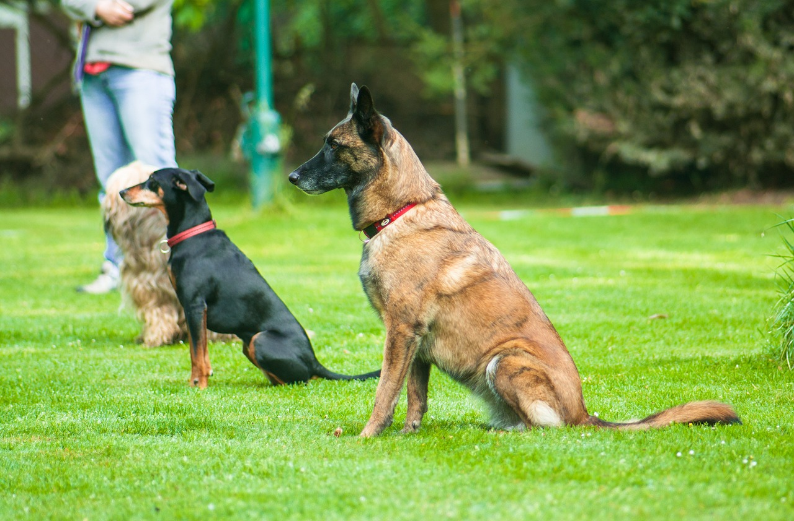
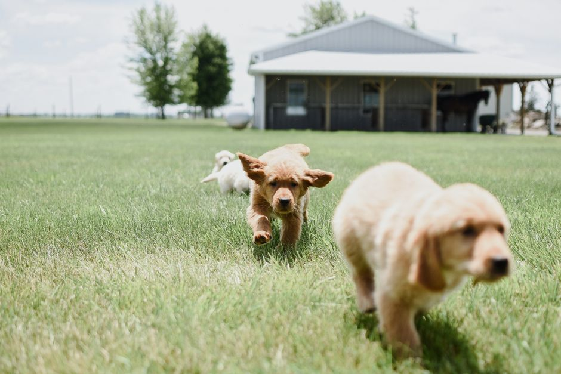

Les exercices de socialisation clés pour l'épanouissement de votre animal

Photo: susanne906 / Pixabay
Exercices de socialisation clés pour l'épanouissement de votre animal
Comprendre la socialisation
Socialisation signifie l'encouragement de l'interaction de votre animal avec des personnes, des animaux et des environnements variés. Une bonne socialisation se fait généralement dans les premiers mois de vie de l'animal. Cependant, il est toujours possible de poursuivre ce processus, surtout si vous adoptez un animal adulte. La socialisation régulière est essentielle pour le bien-être émotionnel et mental de votre animal.
Socialisation canine

Photo: Julissa Pires / Pexels
Exercices de socialisation pour les chiots
Les chiots sont particulièrement sensibles à la socialisation entre 3 et 14 semaines, car c'est le moment où leur cerveau est le plus ouvert aux nouvelles expériences. Les activités de socialisation doivent être amusantes et apaiser le chiot.
-
Introductions à d'autres chiots (2-3 par semaine) : Organisez des rencontres entre chiots de la même taille. Cela peut se faire dans un parc, où ils peuvent interagir librement.
-
Interactions avec des personnes (5-7 par jour) : Présentez-vous à votre chiot de manière amicale et patte-dans-patte. N'oubliez pas d'incorporer des récompenses (biscuits ou caresses) pour les rassurer.
-
Expérience avec différents environnements (une fois par semaine) : Prenez votre chiot dans des lieux variés, comme des magasins, des jardins, des parcs ou même une voiture. Chaque nouvelle expérience doit être introduite progressivement.
Scénario concret : Sophie a adopté un chiot qui est timide et réticent à l'égard des étrangers. Chaque jour, elle présente au chiot une nouvelle personne de manière amicale. Elle a également pris le chiot dans différentes situations, comme un parc ou un supermarché, pour lui montrer que ces environnements ne sont pas menaçants. Grâce à ces exercices, le chiot a progressivement appris à se sentir à l'aise dans diverses situations, ce qui a grandement contribué à son épanouissement.
Socialisation féline
Exercices de socialisation pour les chatons
Les chatons sont également sensibles à la socialisation entre 7 et 12 semaines, car c'est l'époque où leur cerveau est le plus ouvert aux nouvelles expériences.
-
Interaction avec les humains (2-3 par jour) : Encouragez les interactions amicales avec les personnes de la maison et des visiteurs. Utilisez des récompenses comme des jouets ou des friandises pour maintenir un ton positif.
-
Introductions à d'autres chats (2-3 par semaine) : Si vous avez plusieurs chats à la maison, assurez-vous qu'ils peuvent interagir gentiment entre eux. Cela peut se faire dans un espace réservé pour les jeux.
-
Exposition à différents environnements (une fois par semaine) : Déplacez l'appareil d'observation ou le chaton d'un endroit à l'autre, comme entre la cuisine, le salon et la chambre à coucher. Assurez-vous que l'animal a le temps de s'adapter à chaque nouveau lieu.
Scénario concret : Lucas a adopté un chaton sauvage qui était très peureux. Chaque jour, il lui présentait une nouvelle personne de manière calme. Il a également placé l'appareil d'observation dans différents pièces de la maison, de la cuisine à la chambre à coucher, en offrant des récompenses pour l'encourager. Au fil du temps, le chaton est devenu plus confiant et a acquis la confiance nécessaire pour explorer l'espace de la maison.
Conclusion
La socialisation des animaux, qu'ils soient canins ou félines, est un processus crucial pour leur épanouissement. En respectant ces exercices réguliers, vous aiderez votre animal à devenir un compagnon plus heureux et plus serein. N'oubliez pas de faire preuve de patience et de récompenser les progrès, car chaque animal est unique et apprend à son propre rythme.
Produits recommandés
En tant que Partenaire Amazon, je réalise un bénéfice sur les achats remplissant les conditions requises.